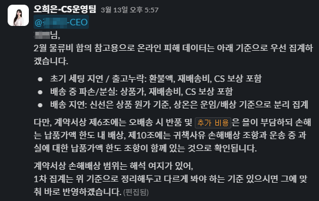

Evidence
실제 과정과 결과물
1. 택배사 보상 절차 협의 경과 요약
표준약관 검토를 통해 협상의 법률적 근거를 확보하고, 이를 바탕으로 택배사와 진행한 협의 과정과 최종 합의 내용을 정리했습니다.
협의 이메일·슬랙 캡처 추가 예정
2. 계약 기반 정산 기준 적용
물류계약서를 직접 검토해 제6조(상차 이후 비용 부담 조항)와 제10조(귀책사유별 배상 책임)를 근거로, 배상 승인 없이 피해액을 물류비에서 선공제할 수 있는 구조임을 직접 판단하고 제안했습니다.
CEO 승인 후 환불액·재배송비·CS 보상까지 포함한 정산 기준으로 공식화했습니다.
배송 파트너(A사)와 물류 파트너(B사)로 익명화하여 표시

3. 실제 정산 자료 정리 및 수정본 전달
체계적인 피해 현황 통보서와 월별 정산 자료를 작성해 파트너에 전달하고, 협의 과정에서 반영된 수정본을 관리했습니다.
이 과정에서 손실 항목이 점진적으로 체계화되어 점점 더 정확한 배상액 산출로 이어졌습니다.


4. 배상 회수 개선 수치 근거 (사내 공유, 2026.03)
월별 배상 회수액의 추이와 구조화된 정산 기준의 효과를 보여주는 수치 자료입니다.
초기 50만 원 수준에서 시작해 700만 원을 넘어 19.1백만 원대로 지속 확대되는 과정을 담고 있습니다.